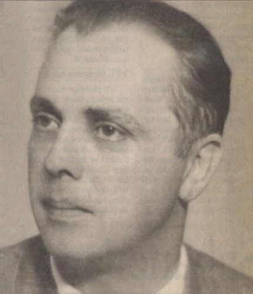
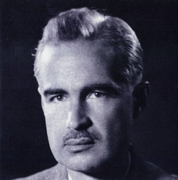
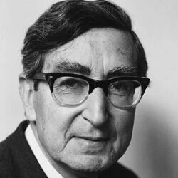
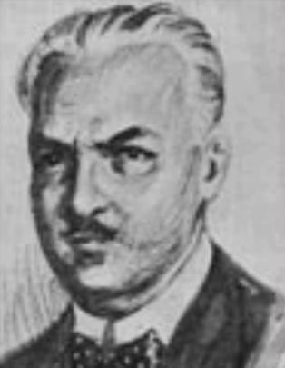
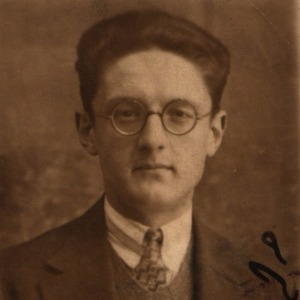
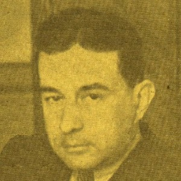

Sabri Esat Siyavuşgil
(d. 1907, İstanbul - ö. 6 Ekim 1968, İstanbul)
Hayatı:
30 Mart 1910'da İstanbul'da doğdu.
29 Ocak 1957'de İstanbul'da yaşamını yitirdi.
Mütareke yıllarında yatılı olarak başladığı Galatasaray Lisesi'nden 1931 yılında,
İstanbul Üniversitesi Hukuk Fakültesi'nden 1936 yılında mezun oldu. Hukuk Fakültesi'nde iken
Cumhuriyet gazetesi muhasebe servisinde, mezuniyetinden sonra Emlak Kredi Bankası'nda çalıştı.
Daha sonra Milli Eğitim Basımevi Tashih Bürosu'nda görev yaptı. Kalp hastalığı üzerine evine
çekilerek Varlık Yayınevi'nin yayın işleriyle meşgul oldu.
Yedi Meşaleci olarak Sabri Esat Siyavuşgil:
- Fotoğraf gözlemciliğiyle çevresini gözler ve izlenimlerini şiirine aktarır. Ancak Yedi Meşaleciler içinde başladığı şairliğe daha sonra veda eder ve daha çok çevirilerle ve inceleme yazılarıyla edebiyat hayatına devam eder.
- En güçlü yanı çevirilerinde görülür. Ancak kendisi mesleğinin psikoloji olduğunu ve mesleğine sadık kalabilmek için sevmesine rağmen şiir yazmadığını söylemiştir.
- Odalar ve Sofalar adlı şiir kitabının yanında inceleme eserleri ve roman çevirileri vardır.

Ziya Osman Saba
(d. 30 Mart 1910, İstanbul - ö. 29 Ocak 1957, İstanbul)
Hayatı:
Haziran 1907'de İstanbul'da doğdu. 1968'te İstanbul'da yaşamını yitirdi. İstanbul Darülfünun'u (İstanbul Üniversitesi) Hukuk Fakültesi'nde başladığı eğitimini Fransa'da Dijon ve Lyon üniversitelerinde felsefe bölümünde tamamladı.
1932'de Türkiye'ye dönüşünde Gazi Terbiye Enstitüsü'nde felsefe dersleri verdi. İstanbul Üniversitesi Edebiyat Fakültesi'nde 1933'te Genel Psikoloji-Pedagoji doçenti, 1942'de profesör oldu. Öğretim üyeliği görevini yaşamının sonuna dek sürdürdü.
İlk şiirleri 1927'de "Güneş" ve "Hayat" dergilerinde yayınlandı. 1928'de altı şair arkadaşıyla birlikte "Yedi Meşaleciler" topluluğunu kurdu ve "Meşale" adlı dergiyi çıkardı. Bu dergi kapandıktan sonra şiirleri "Muhit" ve "Varlık" dergilerinde yayınlandı. Dışavurumcu bir ressam tutumuyla yeni ve canlı şiirler yazdı.
Ulus, Yeni Sabah, Haber gazetelerinde köşe yazarlığı yaptı. Fransız şairlerin şiirlerini Türkçe'ye çevirdi. Edmond Rostand'ın ünlü oyunu "Cyrano de Bergerac"ın Türkçe çevirisiyle büyük ün yaptı.
Psikoloji, eğitim, folklor ve edebiyatla ilgili yazıları birçok dergi ve gazetede yer aldı. Ayrıca Sait Faik Abasıyanık'tan öyküleri Fransızca'ya çevirdi. Bu öyküler "Un Point Sur la Carte" (Haritada Bir Nokta) adıyla Hollanda'da yayınlandı.
Yedi Meşaleci olarak Ziya Osman Saba:
- Sanatçı, şiirlerinde çocukluk özlemi, anılara düşkünlük, ev - aile sevgisi, yoksul yaşamlara karşı utanç duyma ve acıma, Allah'a kulluk, kadere boyun eğiş, küçük mutluluklarla yetinme, ölümün yakınlığı, öte dünya özlemi gibi bireysel konuları işler.
- Dili gayet sade ve açıktır.
- 1940'a kadar hece ölçüsünü kullanmış, bu dönemden sonra serbest şiirler de yazmıştır.
- Şiirlerini Sebil ve Güvercinler, Geçen Zaman, Nefes Almak adlarıyla kitaplaştırmıştır.
- Bunun yanında hikaye kitapları yazmış ve Goncourt Kardeşlerden roman çevirileri de yapmıştır.

Yaşar Nabi Nayır
(d. 25 Aralık 1908, Üsküp - ö. 15 Mart 1981, İstanbul)
Hayatı:
25 Aralık 1908'de Üsküp'te doğdu, 15 Mart 1981'de İstanbul'da öldü. 1929'da Galatasaray Lisesi'ni
bitirdi. Bir dönem bankacılık yaptı. Ulus gazetesinde, Türk Dil Kurumu'nda, Milli Eğitim Bakanlığı
Tercüme Bürosu'nda çalıştı. İlk sayısını 15 Temuz 1933'te çıkardığı Varlık Dergisi'ni yayınlamaya
başladı. 1946 yılında bakanlıktaki görevinden istifa edip Varlık Yayınevi'ni kurdu. Ölümüne değin
de Varlık Yayınevi'ni yönetti.
Yedi Meşaleci olarak Yaşar Nabi Nayır:
- Edebiyatımıza Yedi Meşalecilerle birlikte şair olarak girdi. Zamanla bütün edebi türleri denedi. Roman yazdı, manzum destan yazdı, inceleme ve gezi kitapları çıkardı, makaleler, fıkralar yazdı.
- Ancak edebiyatımızda bunlarla değil yayıncılığıma unutulmayacak olan sanatçı, asıl ömrünü verdiği Varlık dergisiyle anılacaktır. Onun adıyla özdeşleşen en önemli yapıtı hiç kuşkusuz kırk sekiz yılını verdiği bu dergidir.
- Şiirleri yazıldıkları dönemin biçim özelliklerini yansıtır. Ancak çevreyle ilişkileri olmayan, insan ve toplum üzerinde gözlemlere dayanmayan şiirlerdir bunlar. Yazarın iç dünyasını yansıtmaktan da uzaktırlar.
- Kahramanlar, Onar Mısra adlı şiir kitapları; Bir Kadın Söylüyor, Adem ile Havva adlı romanları; inkılap Çocukları, Köyün Namusu adlı oyunları; Atatürkçülük Nedir, Dost Mektupları gibi inceleme eserleri vardır.

Muammer Lütfi Bahşi
(d.1903, Ödemiş- ö. 30 Mayıs 1947, Ödemiş/ İzmir)
Hayatı:
Müderris Lûtfî Efendi'nin oğludur. İlk ve orta öğrenimini Ödemiş Rüşdiye ve
İdadîsinde yaptı. Arapça, Farsça öğrendi. İstanbul İlâhiyat Fakültesini (1927),
ardından Hukuk Fakültesini bitirdi (1929).
Antalya, Kuşadası, Bozdoğan, Nazilli, Muğla, Ürgüp ve Demirci'de hâkimlik yaptı.
Sürekli yer değiştirmeden rahatsız olarak istifa etti. Ölümüne kadar memleketi
Ödemiş'te avukatlık yaptı.
Cumhuriyet devri Türk şiirinde Yedi Meşaleciler diye anılan şâirler gurubuna
katıldı. Meslekî zorunlulukları, çalışmalarına uygun bir ortam bulamaması
yüzünden sesini gerektiği gibi duyuramadı.
Şiirlerinde arûz ve hece ölçüleriyle millî konuları işledi. Daha sonra serbest nazma yöneldi.
Şiirlerini İzmir'de Ahenk, Sada-yi Hak, Yeni Gün gazeteleriyle Mahfel, Nazikter, Hilâl, Şark,
Anadolu, Yurt, Yanık, Servet-i Fünûn, İçtihad, Yeni Ses ve Antalya Halkevi'nin çıkardığı
Türk Denizi dergilerinde yayımladı. Yedi Meşale kitabının yayımlanmasından ardından, arkadaşları
ve Yusuf Ziya Ortaç'la Meşale dergisini çıkardılar (8 sayı, 1928).
Yedi Meşaleci olarak Muammer Lütfi Bahşi:
- Asıl mesleği Avukatlıktır.
- Arapça ve Farsça bilen şair Yedi Meşale grubu içinde edebi faaliyetlerini sürdürdü.
- Edebiyat alanında çok fazla yapıt vermedi.
- Türk Akdeniz ve İlk Kurşun adlı yapıtları vardır.

Vasfi Mahir Kocatürk
(d. 1907, Gümüşhane - ö. 17 Temmuz 1961, Ankara)
Hayatı:
1907'de Gümüşhane'de doğdu, 1961'de Ankara'da yaşamını yitirdi.
1930'da Mülkiye Mektebi'ni bitirdi. Çeşitli illerde edebiyat öğretmenliği
yaptı, idareci olarak çalıştı. 1948-1950 arasında müfettişlik yaptı.
1950-1954 arasında Türkiye Büyük Millet Meclisi'nde Gümüşhane milletvekili
olarak bulundu.
Yedi Meşale Topluluğu üyeleri arasına girdi. Önce epik şiirler yazdı.
Daha sonra hece ölçüsüyle, âşık tarzı şiire yöneldi.
Kahramanlık, fedakarlık, milli duygular, vatan ve millet sevgisi gibi
temalar işledi.
Manzum oyunlar, çocuk hikayeleri, antolojileri ve edebiyat araştırmaları da var.
Yedi Meşaleci olarak Vasfi Mahir Kocatürk:
- Halk şiirlerinin biçimsel özelliklerinden yararlanarak hece ölçüsüyle ulusal, epik, lirik şiirler yazmıştır.
- Manzum oyunlar da denemiş olan Kocatürk, bir sanatçı olmaktan çok, edebiyatla ilgili kitap ve araştırmalarıyla tanınmıştır.
- Tunç Sesleri, Geçmiş Geceler, Bizim Türküler, Ergenekon adlı şiir kitapları; Yaman, Sanatkar adlı oyunları; Yeni Türk Edebiyatı, Divan Şiiri Artolojisi, Türk Edebiyatı Tarihi adlı araştırma inceleme eserleri vardır.

Cevdet Kudret Solok
(d. 7 Şubat 1907, İst. - ö. 10 Temmuz 1992, İst.)
Hayatı:
7 Şubat 1907'de İstanbul'da doğdu, 10 Temmuz 1992'de aynı yerde öldü.
Birinci Dünya Savaşı'nda babası ölünce annesi tarafından okutuldu,
1933'te İ. Ü. Hukuk Fakültesi'ni bitirdi. 1933-45 arası Kayseri ve Ankara
Atatürk liselerinde ve Ankara Devlet Konservatuvarı'nda edebiyat öğretmenliği,
1945-1950 arası Türkiye Ansiklopedisi bürosunda edebiyat sekreterliği yaptı.
Türk Dil Kurumu'nda görev aldı.
Yazı yaşamına 1927'de Servet-i Fünun dergisinde başlayan Cevdet Kudret,
Meşale dergisinde toplanan Yedi Meşale'cilerden biridir. Grubun ortak
kitabı Yedi Meşale (1928) ile kendi kitabı Birinci Perde'de (1928) yer
alan şiirlerinde 'bireysel duyguları, münzevi ve kötümser, ama orijinal
açılardan arada hikâye ve balad imkanlarından da faydalanarak başarıyla
yansıttı' (Edebiyatımızda İsimler Sözlüğü). Aynı yıllarda oyunlar da yazdı.
Yedi Meşaleci olarak Cevdet Kudret Solok:
- Başlangıçta gençlik dönemindeki şiir anlayışının dışına çıkmadan hece ölçüsüyle, bireysel duygularını ve karamsar iç dünyasını dile getirmiş, sonra ölçüsüz fakat uyaklı şiirler yazmıştır.
- Kendi yaşamını da yansıttığı roman, öyküleri ve oyunları yanında onu daha çok tanıtan yapıtları, inceleme-araştırma eserleridir.
- Eleştirel bir yöntemle açıkladığı konuları, gelecek kuşaklar için hem aydınlatan hem tartışılabilecek olan bilgi kaynaklarıdır.
- Cevdet Kudret Türkçenin sadeleşmesini istemesine rağmen "Dilleri Var Bizim Dile Benzemez" adlı eserinde özleştirmenin sınırlanmamasının doğru olmayacağını, yüzyıllardır kullanılan yabancı sözcüklere karşılıklar bulmanın, ölü sözcükleri diriltmenin yararsız olacağını savunmuştur.
- Birinci Perde adlı şiir kitabı; Tersine Akan Nehir, Rüya İçinde, Kurtlar adlı oyunları; Süleyman'ın Dünyası adı altında topladığı romanı; Sokak adlı öykü kitabı; Örneklerle Edebiyat Bilgileri, Türk Edebiyatında Hikaye ve Roman, Orta Oyunu adlı inceleme eserleri, Türk Edebiyatı adlı ders kitapları vardır.

Kenan Hulusi Koray
(d. 9 Haziran 1906, İstanbul - ö. 23 Mayıs 1943, Adapazarı)
Hayatı:
Son devir hikayecilerinden, 1906 İstanbul doğumludur. İstanbul Erkek Lisesini
bitirdikten sonra İÜ bkz. İstanbul Lisesi Edebiyat Fakültesi'nda yaptı yüksek
öğrenimini.
1928'de Yedi Meşaleciler arasında tek hikaye yazarıydı. 1934 yılında Vakit'te
çalışmaya başladı ve gazetenin yazı işleri müdürü oldu. Adapazarı'nda yedek
subay olarak askerliğini yaparken tifüsten öldü (1943). Yazar, hikayede Ömer Seyfeddin'den
başlayarak gelişen çizgisinde önceleri üslubu ve muhtevası ile
Sait Faik ve Ahmet Hamdi Tanpınar'ı hazırlayan fantastik bir yol tuttu. Sonraları
daha gerçekçi konulara yöneldi.
Kenan Hulusi'nin edebiyat dünyasına adım atması öğrencilik yıllarına denk düşer.
"Serveti Fünun" dergisinde yayınlanan ilk hikayelerinin ardından, aynı dergiye yazan
diğer altı arkadaşı ile birlikte, edebiyatımızda "Yedi Meşaleciler" diye anılan
topluluğu oluşturdular. İçlerindeki tek hikaye yazarıydı Kenan Hulusi.
1928'de, önce bir antoloji, ardından da bir dergi hazırlayarak manifest bir çıkış
yapan ve Sabri Esat Siyavuşgil, Ziya Osman Saba, Yaşar Nabi Nayır, Muammer Lufi,
Vasfi Mahir Kocatürk, Cevdet Kudret ve Kenan Hulusi'den oluşan topluluk, milli
edebiyatçıların sığlıklarına, gerçekçilikten kopmuş ve içi boşalmış "milli"liklerine
bir tepkiyi dillendiriyordu. Ancak uzun soluklu olmayan çıkışları, "Meşale" dergisine
iltica etmeleriyle son buldu. Kenan Hulusi'nin "Vakit" gazetesine geçişi ve Sadri
Ertem'in etkisiyle gerçekçiliğe yönelişi bundan sonradır.
Yaşadığı sürede beş hikaye kitabı yayınlamış, "Osmanoflar" romanı ve kısa
hikayelerinin bir çoğu gazete sayfalarında kaybolup gitmiştir. Gazeteciliğinin
de etkisiyle küçük hikaye tarzını benimseyen Kenan Hulusi, Cumhuriyet döneminde
korku türünde örnekler veren ilk hikayecidir.
Yedi Meşaleci olarak Kenan Hulusi Koray:
- Edebiyat dünyasına adım atması öğrencilik yıllarına denk düşer. "Serveti Fünun" dergisinde yayınlanan ilk hikayelerinin ardından, aynı dergiye yazan diğer altı arkadaşı ile birlikte, edebiyatımızda "Yedi Meşaleciler" diye anılan topluluğu oluşturdular.
- İçlerindeki tek hikaye yazarıydı.
- Yaşadığı sürede beş hikaye kitabı yayınlamış, "Osmanoflar" romanı ve kısa hikayelerinin bir çoğu gazete sayfalarında kaybolup gitmiştir.
- Gazeteciliğinin de etkisiyle küçük hikaye tarzını benimseyen Kenan Hulusi, Cumhuriyet döneminde korku türünde örnekler veren ilk hikayecidir.
PROJE

Yapan Hakkında:
Adı: Mücahit Yusuf Yasin
Soyadı: Gündüz
Sınıfı: 12/C
Numarası: 3127
Proje Hakkında:
Konu: Yedi Meşaleciler Kimdir?
Ders: Türk Dili ve Edebiyatı
Öğretmen: Osman Balcı
Ödev Teslim Tarih: 23.05.2022
Kaynakça: Linke Git..
Kaynak Kodu: Github sayfasına göz atın.